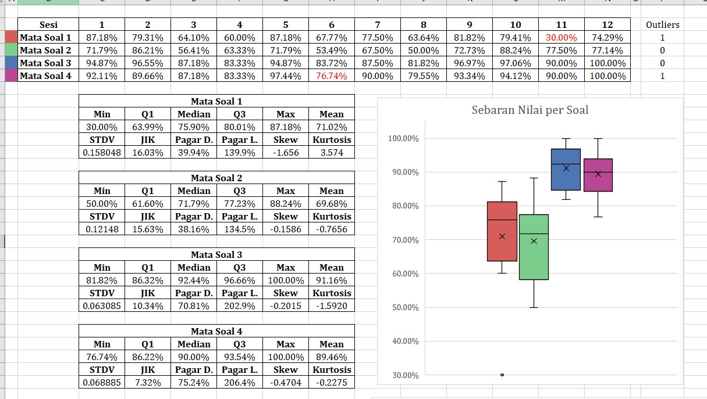
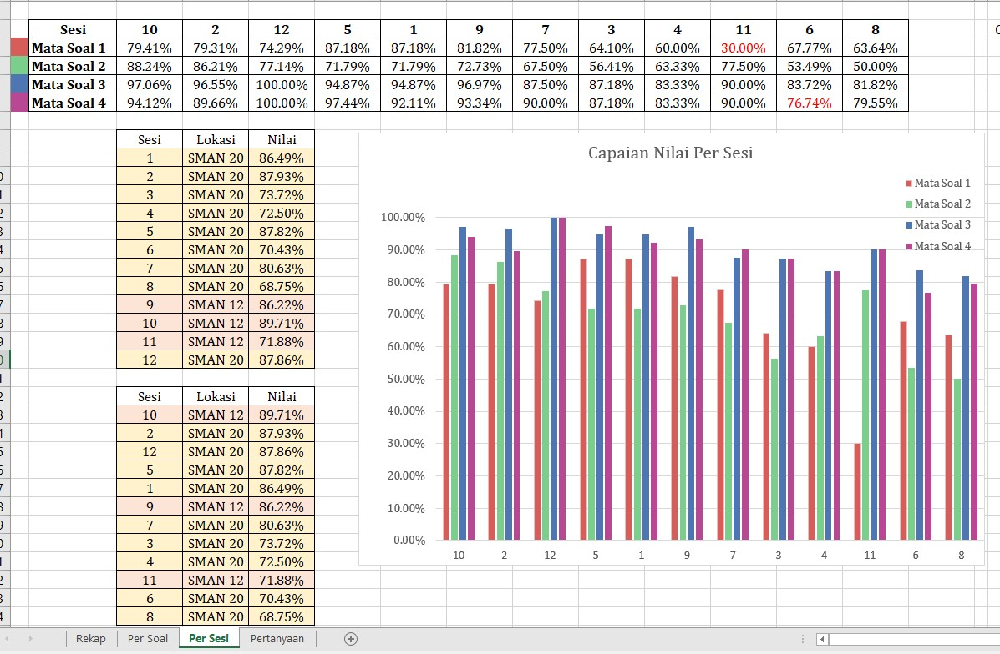
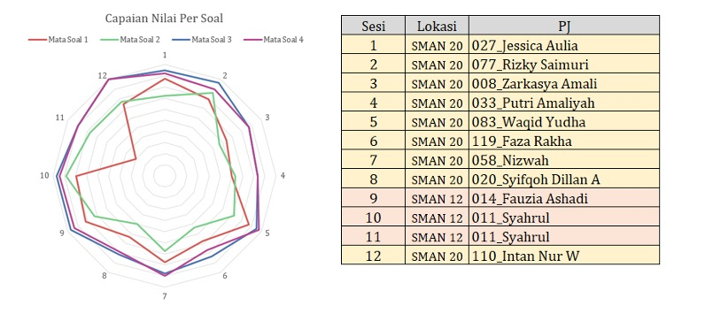

Penilaian dilakukan melalui kahoot dengan 4 soal materi dan 1 soal bonus, dan dikerjakan oleh 444 murid SMA, 107 dari SMAN 12 dan 337 dari SMAN 20 Bandung pada Jumat, 12 September 2025. Ketiga peserta dengan nilai tertinggi setiap sesi/kelasnya diberikan hadiah oleh panitia. Secara keseluruhan, diperoleh nilai rata-rata sebesar 80.3%. Apabila dilihat dari masing-masing soal, rata-rata sekitar 70% dapat menjawab mata soal pertama dan kedua, sementara untuk mata soal ketiga dan keempat lebih mendekati 90%. Dari sini, terdapat dua kemungkinan, yakni soal 1 dan 2 lebih susah, atau keduanya kurang ditangkap oleh sebagian peserta tes.
Evaluasi Kegiatan Penyuluhan Geodesi di SMAN 12 dan SMAN 20 Bandung

Setelah dilakukan penjabaran statistik, beberapa hal dapat disimpulkan; pertama, penyebaran data bersifat tidak normal, karena walaupun simpangan bakunya berukuran kecil, nilai skew dan kurtosis cukup signifikan, terutama untuk mata soal 1 dan mata soal 2. Dari nilai skew yang negatif, diketahui bahwa pada semua pertanyaan, nilai condong ke arah besar atau positif. Sementara dari kurtosis, mata soal 1 bersifat sangat lancip, sementara untuk ketiga soal lainnya lebih landai. Perbedaan tersebut dapat terjadi karena mata soal 1 memiliki jawaban yang mudah diidentifikasi. Untuk pencilan, hanya terdapat 1 kasus, yakni pada awal sesi 11, di mata soal 1. Di mana setelah saya tanya penanggungjawabnya, memang terdapat masalah teknis sehingga sebagian peserta terkendala memilih jawaban yang benar.
Dikarenakan soal tersebut dilakukan hanya pada akhir pemaparan, maka yang terukur hanyalah pemahaman peserta pada akhir mata acara. Idealnya, terdapat 2 kali pengujian yang berupa pre-test dan post-test, namun akibat alokasi waktu yang pendek, diputuskan untuk hanya melakukan 1 tes di akhir. Berdasarkan tes tersebut, dapat dikatakan peserta memahami secara dasar mengenai apa itu Geodesi, ilmu Geodesi, lalu alat-alat seperti peta dan kompas. Namun, terdapat kekurangan selain tes pembanding yakni jumlah serta substansi soal, yang menurut kami 4 soal dengan pertanyaan dan jawaban yang ada kurang pas untuk menilai kepahaman peserta dengan akurat. Lalu keberadaan soal bonus (mata soal 5) yang tidak berkontribusi kepada nilai juga dihitung kurang efisien.
Berikut adalah grafik batang yang menunjukkan nilai setiap sesi, diurutkan dari sesi dengan rerata nilai tertinggi hingga yang terendah; Di sini, SMAN 12 dengan sesi 10, 9, dan 11 berada pada urutan pertama, keenam, dan kesepuluh, sehingga disimpulkan terdapat variasi pada tingkat kepemahaman antara kedua sekolah, dan bahkan variasi dalam satu sekolah juga.

Lalu grafik radar untuk nilai setiap sesi, serta tabel keterangan sesi, lokasi dan penanggungjawabnya; terlihat jelas anomali pada mata soal 1 di sesi 11, serta perbedaan antara kedua soal pertama dan kedua soal akhir:
